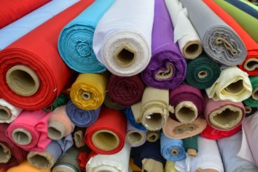

Professionelle Polsterer-Dienstleistungen für jeden Bedarf
Unser Polster-Service umfasst alles, was Ihr Polstermöbel wieder in Bestform bringt. Wir bieten:
Wir arbeiten mit allen gängigen Polstermöbel-Typen: Sofas, Ecksofas, Récamiere, Fauteuil, Sessel, Küchenbänke, Hocker und vieles mehr. Jedes Stück wird individuell behandelt und mit höchster Sorgfalt bearbeitet.

Die Wahl des richtigen Bezugsstoffs ist entscheidend für Look und Langlebigkeit Ihrer Polstermöbel. In unserer großen Stoffauswahl finden Sie:
Unser erfahrenes Team berät Sie gerne bei der Auswahl des passenden Materials für Ihre Bedürfnisse – ob für stark beanspruchte Familienmöbel oder edle Einzelstücke.
Wir sind auch der richtige Partner für gewerbliche Kunden. Unsere Referenzen umfassen:
Für gewerbliche Projekte bieten wir spezielle Konditionen, Mengenrabatte und professionelle Ansprechpartner. Wir verstehen die besonderen Anforderungen an Haltbarkeit, Brandschutz und Hygiene.
Wir wissen, dass Polstermöbel oft groß und schwer sind. Deshalb bieten wir einen kompletten Logistik-Service:
Unser Service umfasst Wiener Neustadt und das umliegende Niederösterreich. Kontaktieren Sie uns für ein unverbindliches Angebot.
Jedes Projekt ist einzigartig. Kontaktieren Sie uns für eine persönliche Beratung und ein maßgeschneidertes Angebot.
Kontakt aufnehmen